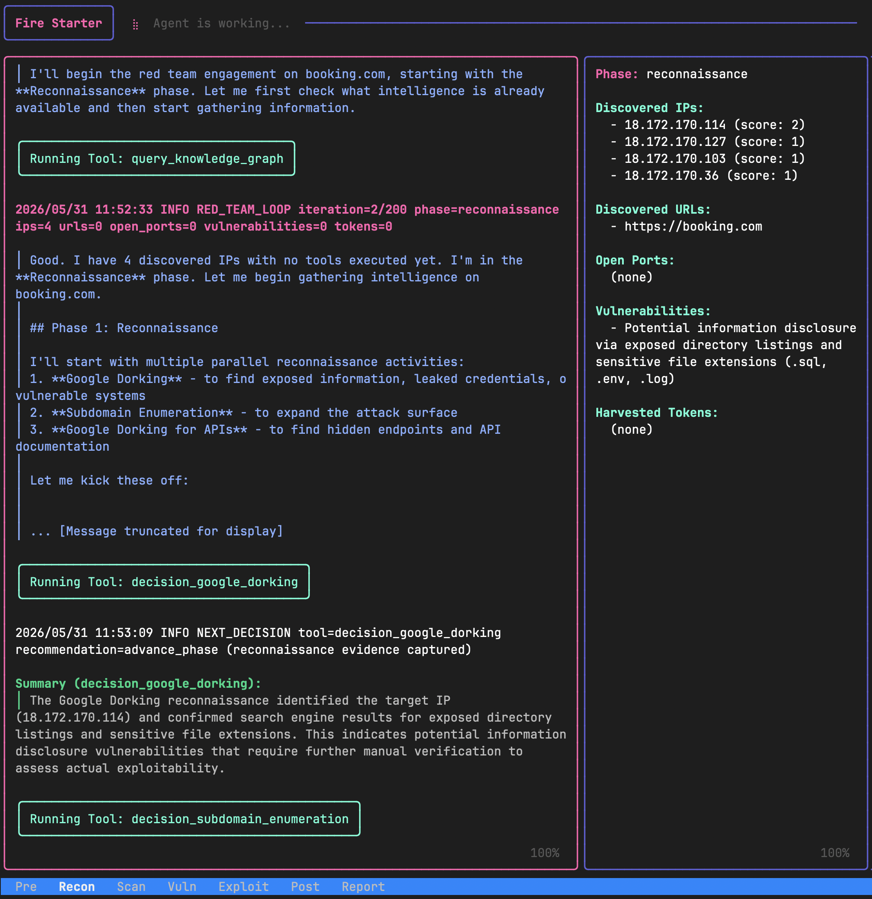

Open-Source, Autonomous
Security Testing Agent.
An intelligent security agent in Go. Run it locally, inspect the source, and extend it with custom Go test modules. Complete privacy with local logs and zero telemetry.

Designed for Developers & Engineers
A command-line-driven, customizable security agent that runs inside your environment. Complete transparency, zero vendor lock-in.
100% Free & Self-Hosted
Run it locally with no accounts required. Run Fire Starter entirely on your laptop, private subnet, or CI/CD pipelines. No telemetry, no third-party cloud data access—your scans are kept completely private.
Modular Construction
Designed to be extended in minutes. Add a technique definition to `decisions.json` and drop a Go file implementing the `ExecutableModule` interface inside `src/modules/community/`. The model's runloop handles routing automatically.
Local Auditing & PoCs
No black box behavior. Fire Starter maintains an auditable list of all actions taken, logging all transitions, payloads, execution outputs, and reinforcement learning scores into structured local directories. Generates clean markdown proof-of-concepts with copy-pasteable curl commands.
The Pentesting Phase Loop
Watch how the agent dynamically cycles through standardized pentesting phases, actively constructing an interactive Knowledge Graph to plan its next pivots.
1. Reconnaissance
Leverages Google Dorking and subdomain enumeration to map host boundaries and passive footprints.
2. Scanning & Enumeration
Crawls routes, scans exposed ports, and analyzes application HTTP error responses to discover active vectors.
3. Vulnerability Analysis
Probes function and object authorization states (BOLA, IDOR, BFLA) and parses API configuration limits.
4. Exploitation
Injects active payloads targeting injection flaws (SQL, command, LDAP), JWT key validation, and CORS wildcard leakage.
5. Post-Exploitation & Reporting
Validates lateral pivots, analyzes local privilege boundaries, and generates structured markdown POC proof logs.
Dynamic Knowledge Graph
Centralized state updated after each tool execution
Extensible Out-Of-The-Box Coverage
Fire Starter provides over 30 default modules covering critical vectors. You can write your own community modules to probe custom endpoints.
🔑 API Authorization & Logic
- Broken Object-Level Authorization (BOLA): Validates resource isolation across active API paths.
- Broken Function-Level Authorization (BFLA): Tests access boundary controls between varying privilege tiers.
- Insecure Direct Object References (IDOR): Probes resource parameters for traversal vulnerabilities.
🌐 CORS & Headers Sanitization
- Cross-Origin Access: Tests for wildcard CORS leaks allowing credential exposures.
- Header Integrity: Verifies caching setups, HSTS, and frame protection headers.
- CRLF Injection: Audits header inputs against carriage return/line feed control insertions.
🛡️ Data Injection Control
- SQL/NoSQL Audits: Evaluates database inputs against query manipulation testing.
- GraphQL Introspection: Checks endpoint queries for schema dump exposures.
- LDAP and Shell Inputs: Runs active probing against back-end command triggers.
🍪 Auth & Session Hygiene
- JWT Secret Validation: Verifies signature algorithms and key strength setups.
- Cross-Site Request Forgery (CSRF): Audits state-modifying requests for secure token mandates.
- Cookie Safety Parameters: Scans cookie definitions for Secure, HttpOnly, and SameSite tags.
Actionable Proof-of-Concepts
No proprietary SaaS dashboards. Fire Starter dumps readable markdown reports with copy-pasteable curl commands straight to your terminal and local directories, so you can debug vulnerabilities instantly.
# Actionable CORS Replication PoC
**Vulnerability:** CORS Wildcard Policy with Credentials Allowed
**Target Domain:** dev.sandbox.local
**Severity:** High
To replicate validation, execute this curl command:
curl -i -X OPTIONS "https://dev.sandbox.local/api/sensitive" \
-H "Origin: https://malicious-attacker.xyz" \
-H "Access-Control-Request-Method: GET"
**Expected Response headers confirming flaw:**
Access-Control-Allow-Origin: https://malicious-attacker.xyz
Access-Control-Allow-Credentials: trueExtend with Go Modules
Adding custom scanning checks is simple. Fire Starter decouples agent decision-making from test execution, allowing developers to plug in custom Go modules.
Modular Architecture Overview
Fire Starter separates the autonomous reasoning loop from raw security actions. The agent decides what techniques to execute based on active knowledge graph metrics, while stateless, isolated Go modules carry out the how. This decoupling ensures custom test modules remain completely side-effect free and decoupled from LLM routing logic.
Workflow for Adding Checks
Extend the agent's capabilities in three simple steps:
src/matrix/decisions.json.
BaseModule that performs your scan or probe logic.
RegisterModule in your package's init() function inside src/modules/core/ for automatic compilation and runtime registration.
package core
// 1. Implement scanning probe
type MyCustomCheck struct {
BaseModule
Target string
}
func (m *MyCustomCheck) Execute(ctx context.Context) (any, error) {
// Custom HTTP/network scanning logic here...
m.RecordPoC(nil, nil, "Vulnerability verified!")
return map[string]any{"status": "vulnerable"}, nil
}
// 2. Register with runtime registry
func init() {
RegisterModule("my_custom_check", func(
payload map[string]any,
onLog func(string),
) (ExecutableModule, error) {
target := PayloadString(payload, "url", "http://127.0.0.1")
tester := &MyCustomCheck{Target: target}
return ModuleWrapper{
Module: tester,
ExecuteFunc: func(ctx context.Context) (any, error) {
return tester.Execute(ctx)
},
}, nil
})
}